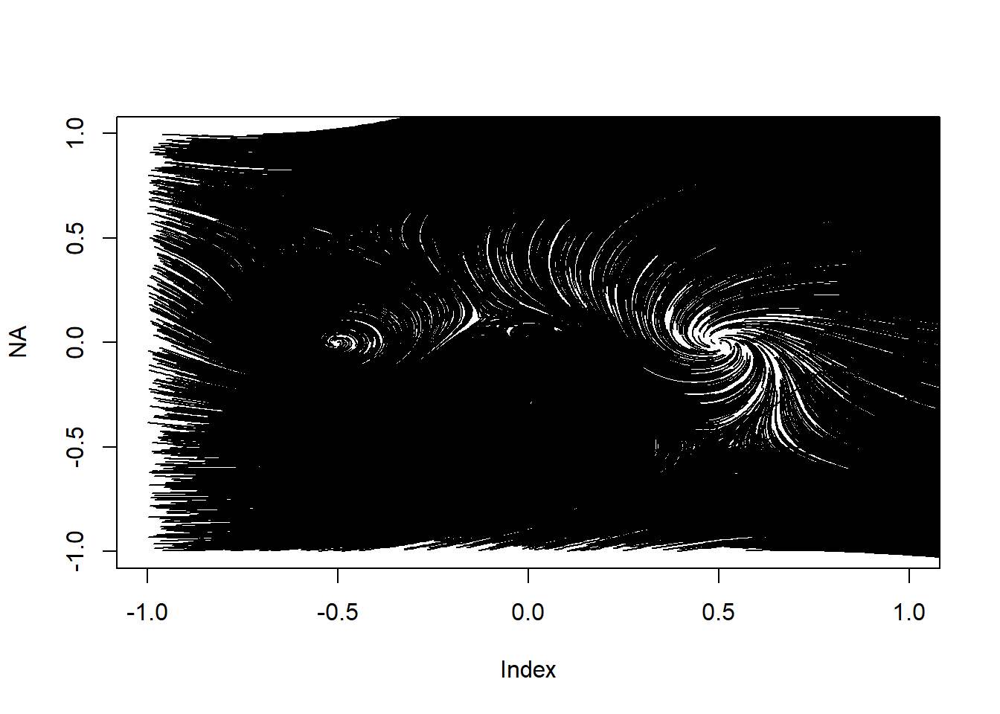
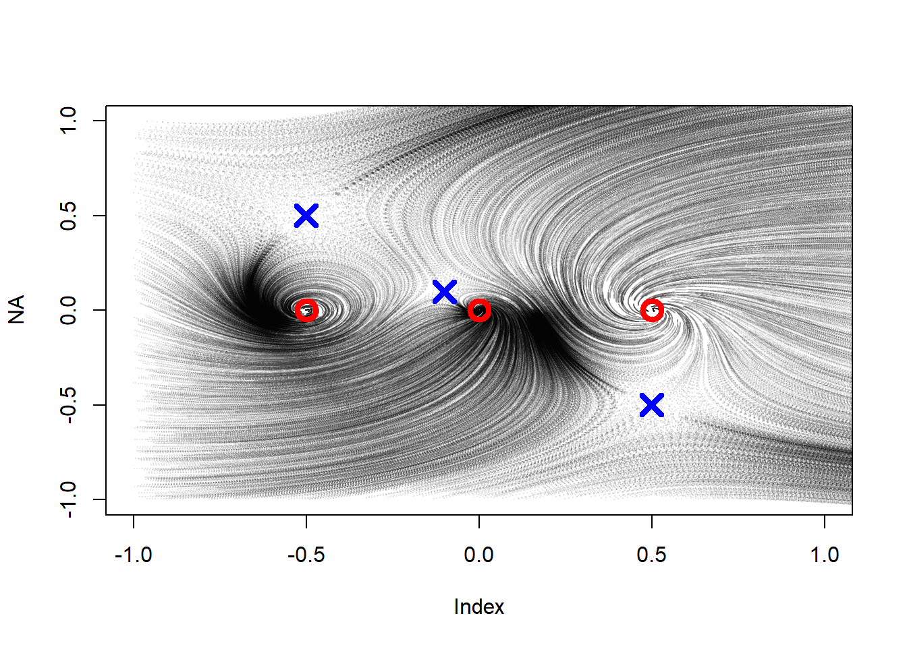
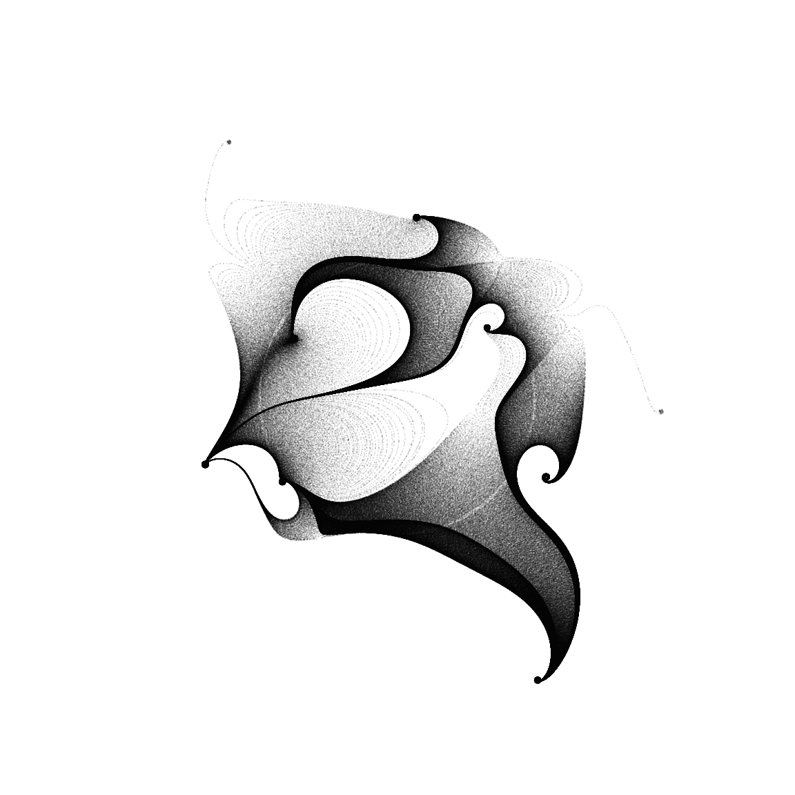

Flow fields, or vector fields, are used a lot in generative art. Here I document an approach to using flow fields for art in R, leading to this image:
Flow field
I didn’t use field flows for ages as I wasn’t sure how I could add anything to what is already done, but lately I had a couple of ideas that seem innovative, or at least produce outputs that don’t look like anything else I’ve seen, so I think its worth documenting.
So I’ll demonstrate an approach creating flow fields using R, and then illustrate how they are used in my latest project.
Visualising a vector field
As with the mystery curves I use complex numbers, because this leads to some interesting maths in the 2D plane, and R makes working with complex numbers very natural.
In this first simple example I create a matrix of starting positions, \(z\), make a vector field \(v\) by rotating \(z\) position by just over 90 degrees to make a flow spiralling inward.
Direction is measured by the argument of a complex number, and I want to keep the velocity of my flow constant, so I standardise \(v\) by diving by \(\left|v\right|\).
Finally I increment the position using \(z_{\text{new}}=z+0.1\times v\) and draw arrows to the new points.
set.seed(2911)library(data.table)N=20dat <-expand.grid(x=seq(-1,1,l=20), y=seq(-1,1,l=20))setDT(dat)dat[ , z := x+1i*y ] # represent positions as complex numbersdat[ , v := z*exp(1i*3*pi/5) ] # create vector field by rotating z by 3pi/5.dat[ , v := v/Mod(v) ]dat[ , znew := z + .1*v ]plot(dat$z, pch=19)arrows(Re(dat$z), Im(dat$z), Re(dat$znew), Im(dat$znew), length=0.05)
Adding streamlines
Streamlines (following individual trajectories) are created by iterating the flow function. I’ll create a matrix called pos to store all the points along the streamlines for plotting. (In R maticies can be complex, each element is a complex number so keeps the \(x\) and \(y\) positions.)
# N streamlines and m iterationsN=20m=100# each row is a streamlinepos=matrix(nrow=N, ncol=m)# make random starting positionsstartz =runif(N,-1,1) + 1i*runif(N,-1,1) # put these starting positions into the first column of pos.pos[,1] <- startz# now create the subsequent columns by iterating the equations above.for(i in2:m){ v <- pos[,i-1]*exp(1i*3*pi/5) pos[,i] <- pos[,i-1] + .02* v/Mod(v)}
Now we can add the streamlines to the previous plot:
plot(dat$z, pch=19,col="grey")arrows(Re(dat$z), Im(dat$z), Re(dat$znew), Im(dat$znew), length=0.05,col="grey")#apply the `lines` function over the rows of pos to add the streamsapply(pos, 1, lines)
NULL
Rational functions
The functions I’m going to use for my vector fields are rational functions, defined by the ratios of two polynomials. So our flow has modulus 1 and argument equal to the argument of:
That is, \[f(z)=\frac{\prod_{i=1}^{n}(z-a_i)}{\prod_{j=1}^{m}(z-b_j)}\]
I’ll illustrate this with a simple polynomial first, turning my last chunk into a function to plot a vector flow based on a function FUN, then passing it a simple polynomial:
# takes a function and draws the vector field. plotFlow <-function(FUN,col="black") { dat <-expand.grid(x=seq(-1,1,l=20), y=seq(-1,1,l=20))setDT(dat) dat[ , z := x+1i*y ] # represent position as a complex number dat[ , v :=FUN(z) ] # create vector field dat[ , v := v/Mod(v) ] dat[ , znew := z + .1*v ]plot(dat$z, pch=19,col=col)arrows(Re(dat$z), Im(dat$z), Re(dat$znew), Im(dat$znew), length=0.05,col=col)}plotFlow( \(z) (z-.5)*(z+.5)*z )
Now we can just call this plotting function with whatever flow function we like. For example, lets plot the vectors associated with
flowFunction = \(z) (z-.5)*(z+.5)*z / ((z-0.5i+0.5)* (z+0.5i-0.5)*(z+.1-.1i))# N streamlines and m iterationsmakeStreams <-function(startpos,m=200,FUN,d=0.02){ pos=matrix(nrow=N, ncol=m) startz =runif(N,-1,1) + 1i*runif(N,-1,1) pos[,1] <- startzfor(i in2:m){ v <-FUN(pos[,i-1]) pos[,i] <- pos[,i-1] + d * v/Mod(v) } pos}N=100startZ <-runif(N, -1,1) + 1i*runif(N, -1,1)pos <-makeStreams(startZ, FUN = flowFunction)plotFlow(flowFunction, col="grey")apply(pos, 1, lines)
NULL
So we have a system for making field flow images. We define a function for our vector field, then pick starting points and iterate to create the subsequent paths.
The artistic elements now all come from how we choose the function and start positions, and how we draw the paths we create.
If we massively increase the number of paths but reduce the number of iterations:
This is a bit dense. If we just draw points instead of lines we can control the density a bit more, and we can use the scattermore library to speed up the plotting enormously:
library(scattermore)
Warning: package 'scattermore' was built under R version 4.1.3
Before we go any further, lets have a look at the implications of choosing specific roots for the polynomials in our rational function. The numerator here has roots at \(0.5\), \(-0.5\) and \(0\). The denominator’s root are at \(-0.5+0.5i\), \(0.5-0.5i\), and \(-0.1+0.1i\). Lets add these points onto the graph to see how they interact with the flow:
It seems at least in this case that the roots of the numerator (red dots) represent sinks or sources for the flow, that is points where flows are either attracted to or repelled from. The roots of the denominator (the poles of the rational function; blue crosses) are saddle points, flows are attracted to them on one axis but repelled in others, hence flows appear to ‘miss’ them altogether.
In fact, this property generally holds, the zeros of our rational function will be sinks or sources, whereas the poles will be saddle points. We can prove this by noting that the argument of our rational function will be the sum of the arguments of the respective terms, and by thinking about how this sum changes as we move around a small area close to one of the poles or zeros.
In our image so far paths are starting from their randomly generated positions, and then flowing toward a sink or off the page. I think this looks messy, I would rather include the entire flow lines, and so I will add the flows both forwards and backwards from each start point. This way I generate the entire flow passing through each point, rather than just a random portion of it.
I’m also changing the makeStreams function to return two column matrix of x and y positions in the form that scattermoreplot expects.
makeStreams <-function(startpos,m=100,FUN,d=0.1){ pos=matrix(nrow=length(startpos), ncol=m) pos2=matrix(nrow=length(startpos), ncol=m) pos[,1] <- startpos pos2[,m] <- startposfor(i in2:m){ v <-FUN(pos[,i-1]) pos[,i] <- pos[,i-1] + d * v/Mod(v) }for(i in (m-1):1){ v <-FUN(pos2[,i+1]) pos2[,i] <- pos2[,i+1] - d * v/Mod(v) } pos <-cbind(pos,pos2) |>as.vector()cbind(Re(pos),Im(pos))}pos <-makeStreams(startZ, FUN=flowFunction,d=0.01)scattermoreplot(pos,size=c(1000,1000), xlim=c(-1,1), ylim=c(-1,1))

We can make a couple of easy improvements. First by squaring the aspect ratio of the plot, second by altering the spacing between the points. At the moment it is fixed, leading to some unintended patterns in the plot points, but we can easily set it to be random:
This image isn’t particularly appealing, but now that we have this system we can make a lot of beautiful images just choosing the locations of the poles and zeros of our flow function, the starting points of the flows and how they are rendered.
First, lets add some more poles and zeros to our flow function. Our original function had three poles and three zeros. Here I’m going to add 20 poles and 20 zeros, choosing the location of each randomly within the canvas.
# Choose the location of the poles and zerospoles <-runif(20,-1,1) + 1i*runif(20,-1,1)zeros <-runif(20,-1,1) + 1i*runif(20,-1,1)# Our flow functionflowFunction <-function(z) { fz = z-zeros[1]for(i in zeros[-1]) fz = fz * (z-i)for(i in poles) fz = fz / (z-i) fz/Mod(fz) }# Make the streams positionspos <-makeStreams(startZ,m=500,FUN=flowFunction,d=0.002)# Plotpar(mar=c(1,1,1,1))scattermoreplot(pos,size=c(1000,1000), xlim=c(-1,1), ylim=c(-1,1),asp=1,axes=F)

Choosing which streamlines to plot by setting the starting points
Next lets alter the starting positions of the flows. In the image above they are randomly selected throughout the canvas, but I could instead start them in a ring of radius 0.5 around the canvas centre. So here we’re seeing every streamline that passes through that ring.
Next exactly the same flow field but with many more streamlines (10000 vs 300) but each with fewer points included creates an effect that looks more like shading:
startZ <-0.6*exp(2i * pi *seq(0,1,l=10000))pos <-makeStreams(startZ,m=200,FUN=flowFunction,d=0.005)par(mar=c(1,1,1,1))scattermoreplot(pos,size=c(3000,3000), xlim=c(-1,1), ylim=c(-1,1),asp=1,axes=F,col=hsv(0,0,0))
Or we could start them at random points along a line passing through the origin:
Here I add 10 poles and 20 zeros arranges in a circle with radius 0.5.
poles <-exp(2i*pi*runif(5))*0.3zeros <-exp(2i*pi*runif(10))*0.3startZ =runif(10000, -1,1) + 1i*runif(10000,-1,1)pos <-makeStreams(startZ,m=500,FUN=flowFunction,d=0.001)par(mar=c(1,1,1,1))scattermoreplot(pos,size=c(3000,3000),xlim=c(-1,1), ylim=c(-1,1),axes=F,col=hsv(0,0,0,.5))
A few more examples
Finally I’ll show a few more examples of different outputs from this system. Most have an element of randomness since the locations of the poles and zeros are selected randomly. Rerunning the code, or changing the seed where it is set, will lead to a different image.
White on black works quite well.
poles <-exp(2i*pi*runif(10))*0.4zeros <-exp(2i*pi*runif(20))*0.4startZ <-0.7*exp(2i * pi *seq(0,1,l=20000))pos <-makeStreams(startZ,m=300,FUN=flowFunction,d=0.01)par(mar=c(1,1,1,1), bg="#111111")scattermoreplot(pos, size=c(1800,1800),xlim=c(-1,1), ylim=c(-1,1), col=hsv(1,0,1,.1),axes=F)

I’ve left the ring of starting points visible on the image because I think it looks nice, but you could easily modify the makeStreams function to remove the starting points from the pos matrix.
For the next image, two concentric circles of starting points, one inside and one outside the ring of poles and zeros:
The poles and zeros can be arranged along a polynomial, with four different circles providing starting positions for the flows.
The colour is fixed within each streamline but the saturation varies between them.
Four circles provide starting points:
set.seed(1214)polesandzeros <- .5*exp(2i*pi*seq(0,1,l=40)[-1])polesandzeros <-seq(-1,1,l=40)-0.5i*seq(-1,1,l=40) + .7i*seq(-1,1,l=40)^2- .3ipole =rbinom(39, 1,0.6)poles = polesandzeros[pole==1]zeros = polesandzeros[pole==0]startZ <-c(0.3*exp(2i * pi *seq(0,1,l=N/4))-0.3-0.3i,0.2*exp(2i * pi *seq(0,1,l=N/4))+0.3-0.3i,0.15*exp(2i * pi *seq(0,1,l=N/4))-0.6+0.6i,0.5*exp(2i * pi *seq(0,1,l=N/4))+0.3+0.3i )pos <-makeStreams(startZ,m=300,FUN=flowFunction,d=0.01)par(mar=0*c(1,1,1,1), bg="#111111")scattermoreplot(pos,size=c(1800,1800),xlim=c(-1,1), ylim=c(-1,1), col=hsv(0,rep(seq(0,1,l=N/4),4*600),1,0.1),axes=F)
Now here’s the code for the cover image for this post.
The poles and zeros are set along the same polynomial as in the previous example. The starting points are arranged in six concentric circles, and the streamlines from each have a different colour between red and blue.
set.seed(1211)polesandzeros <-seq(-1,1,l=40)-0.5i*seq(-1,1,l=40) + .7i*seq(-1,1,l=40)^2- .3ipole =rbinom(39, 1,0.5)poles = polesandzeros[pole==1]zeros = polesandzeros[pole==0]N=60000startZ <-c(0.5*exp(2i * pi *seq(0,1,l=N/6)),0.3*exp(2i * pi *seq(0,1,l=N/6)),0.4*exp(2i * pi *seq(0,1,l=N/6)),0.6*exp(2i * pi *seq(0,1,l=N/6)),0.8*exp(2i * pi *seq(0,1,l=N/6)),1.0*exp(2i * pi *seq(0,1,l=N/6)) )pos <-makeStreams(startZ,m=500,FUN=flowFunction,d=0.005)col=rep(c(hsv(0, 1,0.5,0.4),hsv(0.0,1,0.5,0.4),hsv(0.1,1,0.5,0.4),hsv(0.9,1,0.5,0.4),hsv(0.8,1,0.5,0.4),hsv(1, 1,0.5,0.1) ), each=N/6)col <-rep(col,1000)par(mar=0.1*c(1,1,1,1), bg="#dddddd")scattermoreplot(pos,size=c(3000,3000),xlim=c(-1,1), ylim=c(-1,1), col=col,axes=F)
A few more nice outputs
These are selected from randomly generated images based on the system described above, with various combinations of starting points and rational flow functions.